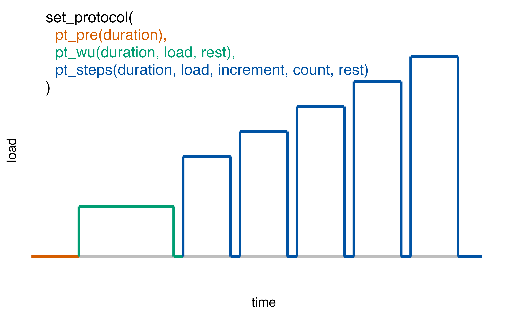

Different measuring devices and analysis software lead to opaque results in measuring gas exchange parameters. To make exercise science more transparent and reproducible, the spiro package offers a standardized workflow for data from cardiopulmonary exercise testing.
This vignette provides information on how the spiro package imports and processes raw data from metabolic carts.
Import and processing with spiro()
The spiro package makes import and processing of cardiopulmonary data easy: The spiro() function does all that work for you. You just need to paste the path of a file with raw data from cardiopulmonary exercise testing to the function. This will return a data.frame containing all relevant data for each second of testing, ready for summarizing or plotting.
library(spiro)
# Get example data
file <- spiro_example("zan_gxt")
spiro(file)
#> load step time VO2 VCO2 RR VT VE HR PetO2 PetCO2 VO2_rel
#> 1 0 0 1 NA NA NA NA NA NA NA NA NA
#> 2 0 0 2 NA NA NA NA NA NA NA NA NA
#> 3 0 0 3 NA NA NA NA NA NA NA NA NA
#> 4 0 0 4 399.08 323.70 13.94 0.77 10.72 NA NA NA 6.05
#> 5 0 0 5 409.83 330.26 14.50 0.74 10.66 NA NA NA 6.21
#> 6 0 0 6 420.58 336.82 15.06 0.71 10.60 NA NA NA 6.37
#> 7 0 0 7 431.33 343.37 15.63 0.68 10.53 NA NA NA 6.54
#> 8 0 0 8 435.30 346.51 16.06 0.69 11.04 NA NA NA 6.60
#> 9 0 0 9 437.02 348.52 16.46 0.71 11.74 NA NA NA 6.62
#> 10 0 0 10 438.74 350.53 16.85 0.74 12.44 NA NA NA 6.65
#> VCO2_rel RE RER CHO FO
#> 1 NA NA NA NA NA
#> 2 NA NA NA NA NA
#> 3 NA NA NA NA NA
#> 4 4.90 NA 0.81 0.20 0.13
#> 5 5.00 NA 0.81 0.19 0.13
#> 6 5.10 NA 0.80 0.19 0.14
#> 7 5.20 NA 0.80 0.18 0.15
#> 8 5.25 NA 0.80 0.18 0.15
#> 9 5.28 NA 0.80 0.19 0.15
#> 10 5.31 NA 0.80 0.19 0.15
#> ... with 2999 more rowsspiro() will return interpolated data for the following parameters:
- load: velocity or power, either retrieved from the raw data file or manually supplied by setting a protocol
- step: coded variable for the number of the load step in the test protocol
- time: time (s)
- VO2: oxygen uptake (ml/min)
- VCO2: carbon dioxide output (ml/min)
- RR: respiratory rate (1/min)
- VT: tidal volume (l)
- VE: minute ventilation (l/min)
- HR: heart rate (bpm), if available
- PetO2: end-tidal partial pressure of oxygen (mmHg)
- PetCO2: end-tidal partial pressure of carbon dioxide (mmHg)
- VO2_rel: relative oxygen uptake (ml/min/kg)
- VCO2_rel: relative carbon dioxide output (ml/min/kg)
- RE: running economy (ml/kg/km), if applicable
- RER: respiratory quotient
- CHO: rate of carbohydrate oxidation (g/min)
- FO: rate of fat oxidation (g/min)
Options for data processing
You can control the exercise protocol, the calculation of parameters related to body weight and the adding of heart rate data with the arguments of spiro() or with the helper functions add_protocol, add_weight() and add_hr() within a piping syntax:
# Note: The Base R pipe requires R version 4.1 or greater
protocol <- set_protocol(
wu(duration = 120, load = 50),
steps(duration = 30, load = 100, increment = 20, count = 24)
)
spiro(file = spiro_example("zan_ramp")) |>
add_weight(weight = 63.4) |>
add_protocol(protocol) |>
add_hr(hr_file = spiro_example("hr_ramp.tcx"), hr_offset = 0)Use breath-by-breath data!
We highly recommended to import only raw breath-by-breath data for several reasons:
- Prior averaging or interpolation happens outside of R and is therefore a non-reproducible data processing step.
- If no data for single breaths is available, some functionality is lost (e.g. breath-based averaging for VO2max determination).
- Prior processing usually leads to data containing less data points, which hinders the automated guessing of exercise protocols based on the available load data.
If you use a metabolic cart that measures, but does not output data on a breath-by-breath basis, read the manufacturer’s instruction on how to export the raw data in such a way. Data from other systems (e.g., mixed chamber) can still be processed with the spiro-package, but protocol guesses and summary calculations have to be treated with caution.
Supported metabolic carts
The spiro package supports different metabolic carts. The metabolic cart a data file is produced by is usually determined automatically, but can also be set manually in the spiro() function. Currently this package supports the following devices:
-
CORTEX (
"cortex"): .xlsx, .xls or .xml files in English or German language -
COSMED (
"cosmed"): .xlsx or .xls files in English or German language -
VYNTUS (
"vyntus"): .txt files (tab-separated) in German language -
ZAN (
"zan"): .dat files, usually with the name "EXED*" in German language
To only import the raw data without further processing (such as interpolation, exercise protocol guessing,…) use the function spiro_import():
spiro_import(file, device = NULL)
#> time VO2 VCO2 RR VT VE HR load PetO2 PetCO2
#> 1 3.44 393 320 13.62 0.79 10.76 NA 0 NA NA
#> 2 7.25 434 345 15.76 0.67 10.51 NA 0 NA NA
#> 3 10.73 440 352 17.14 0.76 12.96 NA 0 NA NA
#> 4 13.97 582 451 18.63 0.65 12.13 NA 0 NA NA
#> 5 17.20 837 677 18.47 1.07 19.71 NA 0 NA NA
#> 6 20.39 902 753 18.87 1.19 22.42 NA 0 NA NA
#> 7 24.37 391 338 15.08 1.01 15.23 NA 0 NA NA
#> 8 28.00 503 428 16.52 0.69 11.45 NA 0 NA NA
#> 9 32.06 246 214 14.78 0.61 8.97 NA 0 NA NA
#> 10 34.65 728 605 23.25 0.54 12.46 NA 0 NA NA
#> ... with 1987 more rowsAlternatively you can access the raw data after a spiro() call by extracting the "raw" attribute of the result.
Exercise protocols
To achieve the full functionality of data summary and plotting with the spiro package, an exercise protocol needs to be attached to the data.
Protocol guessing
By default, spiro() guesses the exercise protocol using get_protocol(), looking for velocity or load data in the imported raw data. To return the protocol guess after a spiro() call, access the "protocol" attribute.
s <- spiro(file)
attr(s,"protocol")
#> duration load type code
#> 1 60 0.0 pre measures 0
#> 2 300 2.0 load 1
#> 3 30 0.0 rest -1
#> 4 300 2.4 load 2
#> 5 30 0.0 rest -1
#> 6 300 2.8 load 3
#> 7 30 0.0 rest -1
#> 8 300 3.2 load 4
#> 9 30 0.0 rest -1
#> 10 300 3.6 load 5
#> 11 30 0.0 rest -1
#> 12 300 4.0 load 6
#> 13 30 0.0 rest -1
#> 14 300 4.4 load 7
#> 15 30 0.0 rest -1
#> 16 300 4.8 load 8
#> 17 30 0.0 rest -1
#> 18 300 5.2 load 9
#> 19 10 0.0 post measures -2Protocol setting
In cases where no load data is saved in the metabolic cart’s file or get_protocol() turns wrong, a protocol can be manually set.
There are two ways to initially generate a protocol: by providing all load-duration combinations with set_protocol_manual() or by using the helper functions within set_protocol(). Once a protocol has been set, it can be used as the protocol argument in a spiro() call or attached to a spiro data frame with add_protocol().
# manually setting a test protocol
pt <- set_protocol_manual(
duration = c(60,300,30,300,30,300,30,300,30,300,30,300,30,300,30,300,30,300),
load = c(0,3,0,3.2,0,3.4,0,3.6,0,3.8,0,4,0,4.2,0,4.4,0,4.6)
)
# attach protocol within spiro call
s <- spiro(file, protocol = pt)
# attach protocol with `add_protocol`
t <- spiro(file)
add_protocol(t, pt)
#> load step time VO2 VCO2 RR VT VE HR PetO2 PetCO2 VO2_rel
#> 1 0 0 1 NA NA NA NA NA NA NA NA NA
#> 2 0 0 2 NA NA NA NA NA NA NA NA NA
#> 3 0 0 3 NA NA NA NA NA NA NA NA NA
#> 4 0 0 4 399.08 323.70 13.94 0.77 10.72 NA NA NA 6.05
#> 5 0 0 5 409.83 330.26 14.50 0.74 10.66 NA NA NA 6.21
#> 6 0 0 6 420.58 336.82 15.06 0.71 10.60 NA NA NA 6.37
#> 7 0 0 7 431.33 343.37 15.63 0.68 10.53 NA NA NA 6.54
#> 8 0 0 8 435.30 346.51 16.06 0.69 11.04 NA NA NA 6.60
#> 9 0 0 9 437.02 348.52 16.46 0.71 11.74 NA NA NA 6.62
#> 10 0 0 10 438.74 350.53 16.85 0.74 12.44 NA NA NA 6.65
#> VCO2_rel RE RER CHO FO
#> 1 NA NA NA NA NA
#> 2 NA NA NA NA NA
#> 3 NA NA NA NA NA
#> 4 4.90 NA 0.81 0.20 0.13
#> 5 5.00 NA 0.81 0.19 0.13
#> 6 5.10 NA 0.80 0.19 0.14
#> 7 5.20 NA 0.80 0.18 0.15
#> 8 5.25 NA 0.80 0.18 0.15
#> 9 5.28 NA 0.80 0.19 0.15
#> 10 5.31 NA 0.80 0.19 0.15
#> ... with 2999 more rowsWith set_protocol() a protocol can be defined without specifying every single load step. You can paste the pre-defined segment types pre(), wu(), const()and steps() into set_protocol() in the desired order. The following graph illustrates an example of this practice:

set_protocol(pre(60), wu(300,80), steps(180,100,25,6,30))
#> duration load
#> 1 60 0
#> 2 300 80
#> 3 180 100
#> 4 30 0
#> 5 180 125
#> 6 30 0
#> 7 180 150
#> 8 30 0
#> 9 180 175
#> 10 30 0
#> 11 180 200
#> 12 30 0
#> 13 180 225Modify body weight
The spiro package calculates parameters relative to body weight. Per default spiro() will look for information on body weight in the meta data of the original data file. If for some reason no or the wrong weight is present in the raw data file, weight can be manually given as an argument in spiro() or with add_weight().
# set body weight as an argument in `spiro()`
s <- spiro(file, weight = 68.3)
# set body weight using `add_weight()`
t <- spiro(file)
u <- add_weight(t, 68.3)Work with external heart rate data
Some metabolic carts only offer complicated options for connecting them to heart rate monitors. If heart rate data was recorded by another kind of device (e.g. wrist watch), this data can be added within the spiro() call or by using add_hr().
# get example data file path
hpath <- spiro_example("hr_ramp.tcx")
# add heart rate data within `spiro()`
h <- spiro(file, hr_file = hpath, hr_offset = 0)
# add heart rate data with `add_hr()`
i <- spiro(file)
j <- add_hr(i, hr_file = hpath, hr_offset = 0)add_hr() will import the heart rate data from a .tcx file and attach it to the existing data set. You can manually set the starting point of the heart rate recording relative to the start of the gas exchange measures recording with the hr_offset argument.